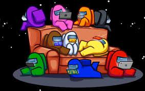

 ¿que es among us?
Among Us es un juego de deduccion social multijugador en linea de 2018 desarrollado y publicado por el estudio de juegos estadounidense Innersloth. El juego se inspiro en el juego de mesa Mafia y en la pelicula de terror de ciencia ficcion The Thing.
descargar